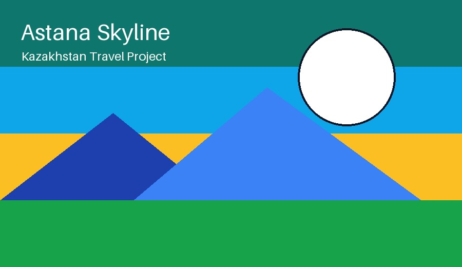
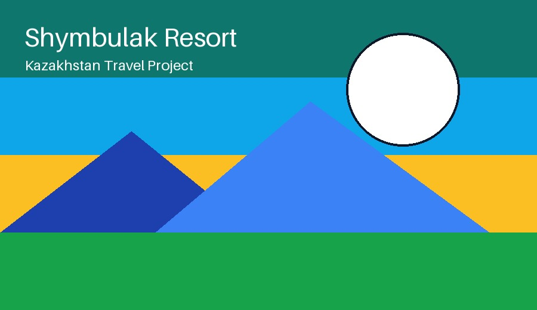

Popular Destinations


Travel Plan Table
| Place | Recommended activity | Best season |
|---|---|---|
| Almaty | Mountain trip and city walk | Spring, summer, winter |
| Astana | Museums and architecture tour | Spring and autumn |
| Charyn Canyon | Hiking and photography | Spring and autumn |
| Lake Kaindy | Nature trip and sightseeing | Summer |